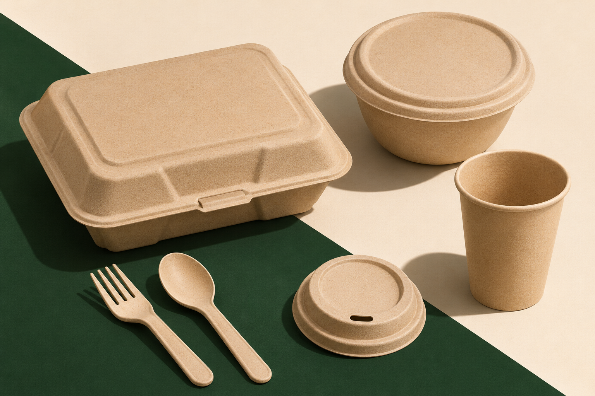

ABOUT SUSTAINO
Better choices, made practical.
Sustaino Packaging TH helps businesses in Thailand explore packaging solutions for food service, cafés, bakeries and retail. We make it easier to compare formats, materials and specifications before placing an enquiry.

What we focus on
Clear product information, considered packaging choices and a straightforward enquiry process. We work with customers to identify a practical packaging option for their service and presentation needs.